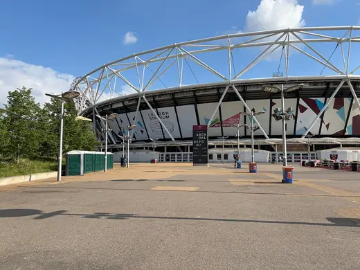

Buildings 109
Sort
 Barbican Estate1982 · London
Barbican Estate1982 · London Balfron Tower1967 · London
Balfron Tower1967 · London Trellick Tower1972 · London
Trellick Tower1972 · London Bloomberg London2017 · London
Bloomberg London2017 · London ArcelorMittal Orbit2012 · London
ArcelorMittal Orbit2012 · London 2 Willow Road1939 · London
2 Willow Road1939 · London Waterloo International1993 · London
Waterloo International1993 · London Red House1860 · London
Red House1860 · London Royal College of Physicians1964 · London
Royal College of Physicians1964 · London Alexandra Road Estate1978 · London
Alexandra Road Estate1978 · London Battersea Power Station1955 · London
Battersea Power Station1955 · London Lloyd's Building1986 · London
Lloyd's Building1986 · London Royal National Theatre1976 · London
Royal National Theatre1976 · London Millennium Dome1999 · London
Millennium Dome1999 · London Barbican Centre1982 · London
Barbican Centre1982 · London London Eye2000 · London
London Eye2000 · London Sir John Soane's Museum1824 · London
Sir John Soane's Museum1824 · London No 1 Poultry1997 · London
No 1 Poultry1997 · London Lord's Media Centre1999 · London
Lord's Media Centre1999 · London Belarusian Memorial Chapel2016 · London
Belarusian Memorial Chapel2016 · London Clore Gallery, Tate Britain1987 · London
Clore Gallery, Tate Britain1987 · London St Pancras railway station1868 · London
St Pancras railway station1868 · London 122 Leadenhall Street2014 · London
122 Leadenhall Street2014 · London The Shard2012 · London
The Shard2012 · London Tate Modern2000 · London
Tate Modern2000 · London
London Stadium2011 · London London Bridge Station2018 · London
London Bridge Station2018 · London Penguin Pool, London Zoo1934 · London
Penguin Pool, London Zoo1934 · London Design Museum2016 · London
Design Museum2016 · London King's Cross station1852 · London
King's Cross station1852 · London Sainsbury Wing, National Gallery1991 · London
Sainsbury Wing, National Gallery1991 · London Queen Elizabeth Hall1967 · London
Queen Elizabeth Hall1967 · London Chiswick House1729 · London
Chiswick House1729 · London British Library1997 · London
British Library1997 · London Isokon Building1934 · London
Isokon Building1934 · London 30 St Mary Axe2004 · London
30 St Mary Axe2004 · London Palace of Westminster1876 · London
Palace of Westminster1876 · London London Aquatics Centre2011 · London
London Aquatics Centre2011 · London Wembley Stadium2007 · London
Wembley Stadium2007 · London Tower Bridge1894 · London
Tower Bridge1894 · London 20 Fenchurch Street2014 · London
20 Fenchurch Street2014 · London London Velodrome2011 · London
London Velodrome2011 · London Shakespeare's Globe1997 · London
Shakespeare's Globe1997 · London BT Tower1964 · London
BT Tower1964 · London SIS Building1994 · London
SIS Building1994 · London Heathrow Terminal 52008 · London
Heathrow Terminal 52008 · London Golden Lane Estate1962 · London
Golden Lane Estate1962 · London